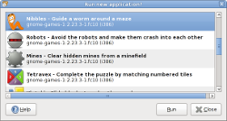
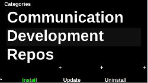
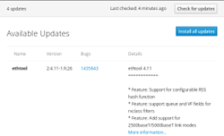
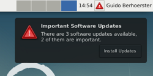
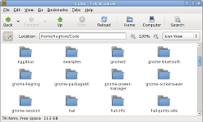
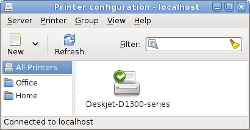
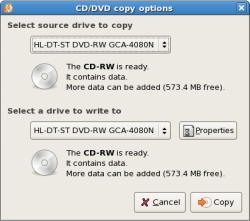
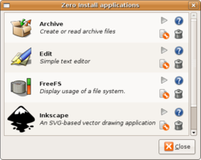
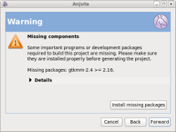

Who uses PackageKit?
|
Who uses PackageKit? |
|
Back to the main page
|  |
GNOME - GNOME PackageKitGNOME PackageKit is a collection of PackageKit GUI tools for use in the GNOME desktop. Supports PackageKit >= 0.4.1 |
|
|
KDE - DiscoverDiscover is the KDE interface for PackageKit. Supports PackageKit >= 1.0.1 |
Listaller Project - ListallerA cross-distribution application management and software installation tool based on PackageKit. Listaller contains a PackageKit plugin which adds support for installing cross-distro packages to PackageKit. It also uses PackageKit to detect dependencies of executables and to install native packages. Supports PackageKit >= 0.7.2 |
|
|  |
Openmoko - AssassinThe Openmoko Installer (Codename: Assassin) is a tool for installing, updating and uninstalling programs on your Neo. Supports PackageKit >= 0.1.5 (the 0_1_X branch is now obsolete) |
|  |
CockpitCockpit makes it easy to administer your GNU/Linux servers via a web browser. Its "Software Updates" page uses PackageKit to show and install available updates. Supports PackageKit >= 0.8 (earlier versions have not been tested). |
|  |
package-update-indicatorThe package-update-indicator utility regularly checks for software updates and notifies the user about available updates using desktop notifications and either a status notifier icon or a system tray icon. Supports PackageKit >= 0.8 (earlier versions have not been tested). |
|  |
GNOME - NautilusThe Nautilus file manager provides a simple and integrated way to manage your files and applications. The file manager lets you organize your files into folders. Nautilus also manages the desktop. The desktop lies behind all other visible items on your screen. The desktop is an active component of the way you use your computer. Uses PackageKit to install missing mime type handlers, to open unknown file formats. |
|  |
Fedora Project - system-config-printerThe purpose of system-config-printer is to configure a CUPS server (often the local machine) using the CUPS API. The tool is written in Python, using pygtk for the graphical parts and with some Python bindings (pycups) for the CUPS API. Uses PackageKit to install missing printer drivers. |
|  |
GNOME - BraseroBrasero is a application to burn CD/DVD for the Gnome Desktop. It is designed to be as simple as possible and has some unique features to enable users to create their discs easily and quickly. Uses PackageKit to install missing gstreamer and burning backends (cdrdao,cdrtools,cdrkit and libburnia) |
|  |
Zero InstallZero Install is a distributed, cross-distribution installation system in which packages are identified by globally unique URIs. Uses PackageKit to install missing dependencies, using the distribution's native package manager through 0launch (version 0.49 or higher) |
|  |
AnjutaAnjuta is an integrated development environment for GNOME supported various programming languages such as C/C++, Python, Vala and Javascript. PackageKit is used to install missing packages when creating a new project. |
Want your project listed here? Send us an email on the mailing list...
Back to the main page